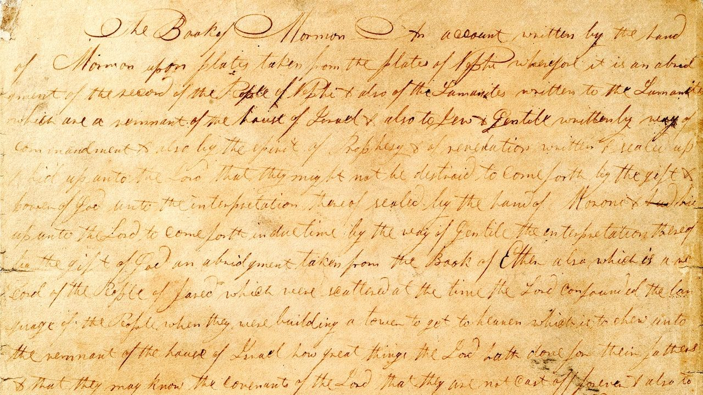
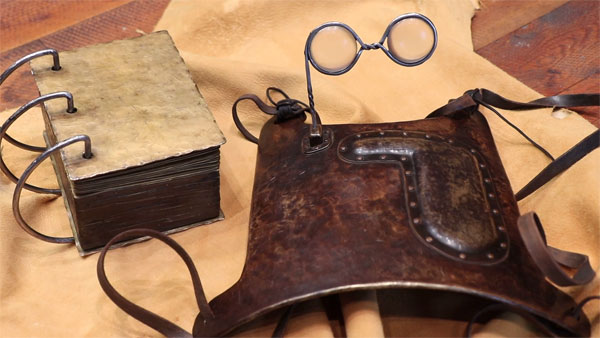
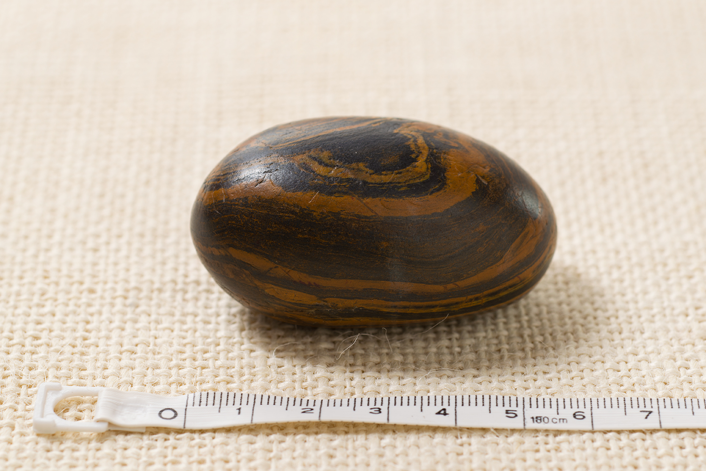
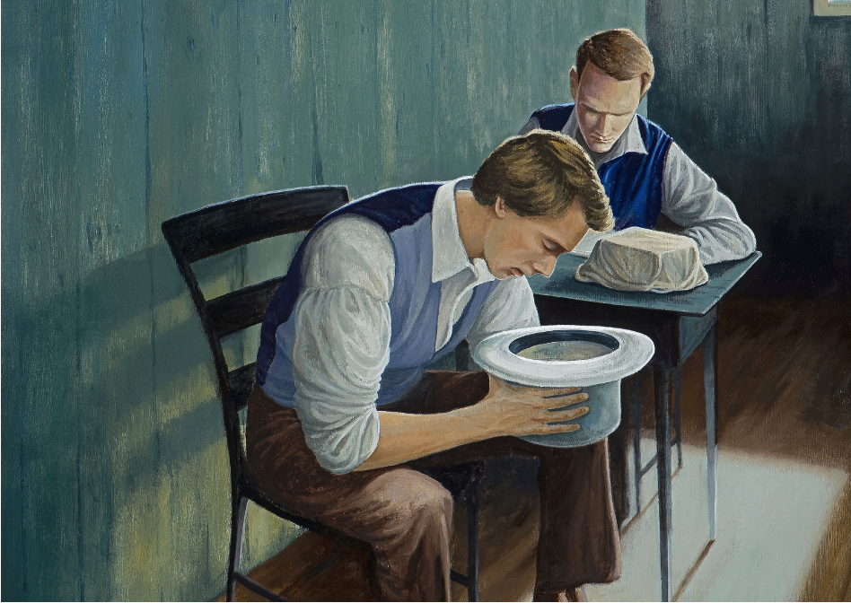

Joseph received the plates in September 1827 and the following spring, in Harmony, Pennsylvania, began translating them in earnest, with Emma and his friend Martin Harris serving as his main scribes.
The resulting English transcription, known as the Book of Lehi and referred to by Joseph Smith as written on 116 pages, was subsequently lost or stolen. As a result, Joseph Smith was rebuked by the Lord and lost the ability to translate for a short time.
Joseph began translating again in 1829, and almost all of the present Book of Mormon text was translated during a three-month period between April and June of that year. His chief scribe during these months was Oliver Cowdery, a schoolteacher from Vermont who learned about the Book of Mormon while boarding with Joseph’s parents in Palmyra. Called by God in a vision, Cowdery traveled to Harmony to meet Joseph Smith and investigate further.
The manuscript that Joseph Smith dictated to Oliver Cowdery and others is known today as the original manuscript, about 28 percent of which still survives.
 Section of original manuscript dictated without punctuation.Instruments
God prepared Joseph for the monumental task of dictating more than 500 printed pages in the form of physical instruments.
One instrument known to Latter-day Saints today as the “Urim and Thummim.” Those who saw it describe it as a clear pair of stones bound together with a metal rim.
This instrument was paired with a breastplate and was found when Joseph initially obtained the plates.
The other instruments was a small stone which Joseph had found as a young man known as a "seer stone."
 Referred to as "Gazelem" in the Book of Mormon.Process
We are fortunate to have access to numerous records from eyewitnesses who can give us some insight to the particulars of the translation process.
Many accounts consistently describe how Joseph would place either the seer stone or the spectacle interpreters into a hat in order to block out any light. He would then dictate the characters that would appear to the scribe, stopping and correcting any spelling errors when necessary.
